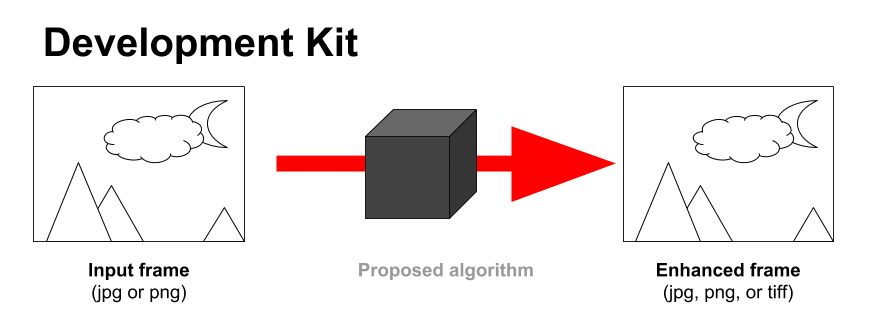
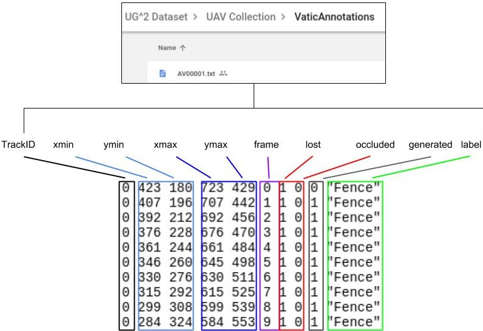

Loading...
FAQ
We will allow for algorithms that receive either JPG or PNG images as their input.

The input images will be provided to the container at run time through Docker’s mounting option, the images to be provided to the participant's algorithms will be either JPG or PNG frames (participants will have to specify the input format their submissions require). The processed image returned by the algorithms must be in one of the following data types:
- JPEG
- JPG
- TIFF
- TIF
- PNG
We restrict the output size to be the same as that of the input images. Therefore, participants whose algorithms are focused on enhancing the images resolution (and consequently modify the size of the input image) would then need to resize their output image to that of the input (we will not do any resizing) if they are participating in Challenge 2.
In addition to this, it is important to mention that once we crop the extracted object regions out of the processed image we will again resize that extracted crop region to the default input size of the classification networks (224x224 for VGG16, VGG19 and ResNet50 and 299x299 for InceptionV3).
The cropped images do not have a fixed size, however the cropping extracts a square cropped region (e.g. if the annotation region was 325x214 we would crop a region of 325x325). This is done so that, the images can be resized to be the input size required by each of the classifiers (224x224 for ResNet, VGG16, and VGG19 and 299x299 for Inception) for the evaluation of the automatic object recognition challenge. The submitted algorithms should then be able to work on images of any size/resolution as we would provide as input the whole video frame, process it and then crop the object of interest out of the image.
Your algorithm's output can be any image format that is supported by OpenCV. We would process JPEG frames with your algorithm and then crop the objects of interest in each of these frames, saving these cropped images in the same format as that of your algorithm's output.
For the evaluation we would do a majority voting considering the highest classification improvement over a majority of the 4 networks (VGG16, VGG19, InceptionV3, ResNet50) on both Rank5-1C and Rank5-AC.
The format of the annotations files is as follows:
 Only the frames in which their objects are not occluded or out of frame (lost) contain valid annotated objects (otherwise the cropped region might not reflect the object specified in the label column). An object is occluded or lost if their value for 7th and 8th column is 1. We provided a cropping module with the dataset which might help you extract such objects in the same way we did for our paper. It is important to note that for the cropping module, the frames have to be extracted using the method described in the vatic annotation tool since the module is tailored to work with the folder structure generated by the tool. However you might adapt it to fit whichever folder structure you have.
Both Pedestrians" and "ResolutionChart" are not classes in ImageNet and consequently, they are not included in the pre-trained classification models. Since we do not expect the participants to produce novel algorithms for recognition and instead encourage them to use the pre-trained models, we would not be considering them for evaluation in Challenge 2 (Image enhancement to improve automatic object recognition). However, we might consider these classes for Challenge 1 (Image enhancement to facilitate manual inspection) as it has nothing to do with classification.
Some of the "super-classes" in the UG2ImageNet.txt are a fine grained label of the another super-class. For instance, the super-class “Fence” is composed by 4 ImageNet synsets (worm fence, picket fence, chainlink fence, and bannister), some of them are also "super-classes” (e.g. ChainlinkFence).
The reason for this is that, for some videos it might be impossible for the annotators to provide a fine-grained annotation label; for example, videos from the Glider and UAV collections contain imagery captured at distances of thousands of feet which might make impossible for the annotators to provide an accurate label among, lets say, different kinds of fences. However, for videos in the Ground collection (which were taken at distances ranging from 30 to 200 feet) we had more control over distance and motion, and were actually able to distinguish some fine-grained ImageNet categories.
As for example, we were able to differentiate between any fence, a bannister and a chainlink fence, which are separate classes in ImageNet. So for the Ground dataset, we have bannister, chainlink fence as separate classes and they are not combined in the Fence superclass as in the other two collections.